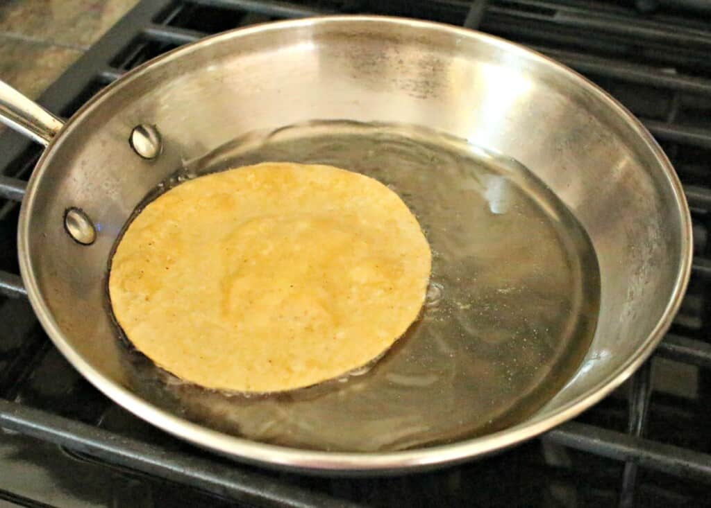
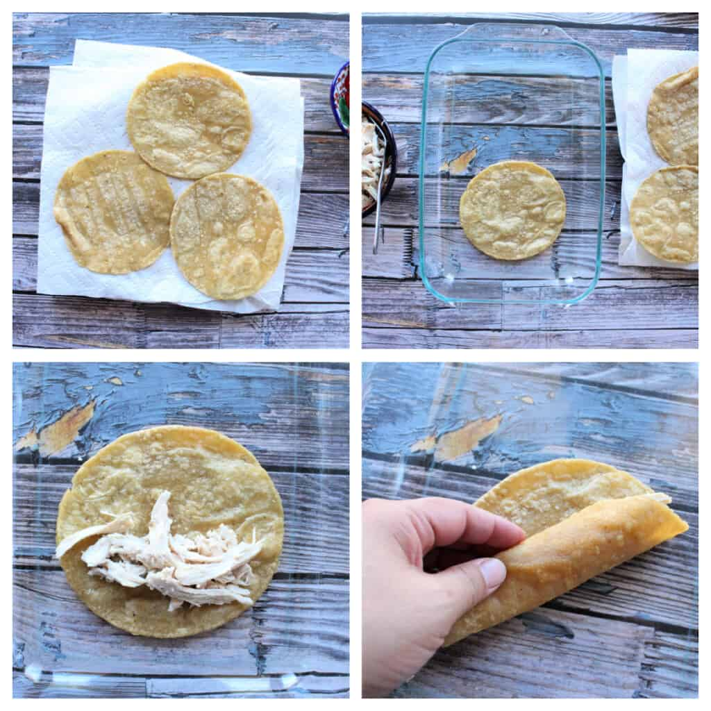
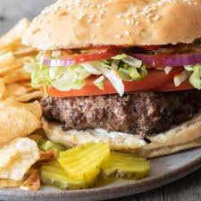
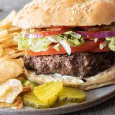

Venezuelan Arepas
A Venezuelan main dish
Mix cornbread with water and salt and form them into several discs. Cook it on an oiled skillet until it is crisp on the outside. Then place into a preheated oven. When they are nice and crisp, split the arepas and fill them with beans, cheese, meat, or vegetables.
Recipe Ingredients
- 2 cups of cornmeal
- 2 1/2 cups of water
- 1 tsp of salt
- 1 tsp of vegetable oil your choice of filling
Recipe Steps
- Preheat oven to 400F
- Pour water into large bowl
- Dissolve the salt into the water
- Slowly add cornmeal
- Mix until the water salt and cornmeal are all blended
- After it is blended, set the bowl aside for 5 minutes
- Make your hands wet and begin to pat the dough into discs
- Keep creating discs (make sure there are no cracks) and place them onto a nonstick pan with vegetable oil
- Flip each arepa after 5 minutes
- Place the arepas onto a baking sheet and place them into the preheated oven
- After 10 minutes, remove them, cut them open and fill them with your desired ingredients.
Additional Images


Enchiladas Verdes de Pollo
A Mexican Main Dish

There are a variety of recipes to make this dish and this. It originates in Mexico.
Recipe Ingredients
- 2 lbs tomatillos
- 4 serrano peppers
- 2 garlic cloves
- 1/4 onion roughly chopped
- 4 cups water
- 1 bunch cilantro
- 1 teaspoon salt
- 1 tablespoon olive oil
- 1 cup canola oil
- 2 cups shredded chicken
- 12 corn tortillas
- Crema Mexicana as desired
- Crumbled queso fresco
- Diced raw onion as desired
- Chopped cilantro as desired
Recipe Steps
- Place the tomatillos, garlic, serranos, onion, and water into a stockpot
- Cover and bring to a boil
- Simmer for 7-10 minutes
- Discard water
- Remove the ingredients from the stock pot and into the blender
- Add salt and cilantro to the blender
- Blend until smooth
- Heat up oil in the same stock pot used to cook the salsa
- Pour in the salsa verde and cook for 10 minutes
- Stir occasionally
- Heat up oil in a frying pan
- Fry the tortillas, 1 minute on each side
- Place on a paper towel to drain excess oil
- Repeat with all the tortillas
- To assemble, place a tortilla in a baking dish, and using your best judgement add about 2 tbsps shredded chicken
- Roll up the tortilla
- Make sure the seam side is down
- Repeat with the remaining tortillas
- Heat up the oven to 375 degrees F
- Cover the tortillas with aluminum foil and place in the oven
- Bake for 15 minutes
- Keep warm in oven until ready to serve
- Pour a generous amount of salsa verde on the plate
- Add the chicken enchiladas to a plate
- Pour more sauce on top
- Add the desired toppings - Crema Mexicana, queso fresco, cilantro, and onion
Additional Images
 Mapo Tofu
A Chinese Main Dish

Need something smooth and spicy? Mapo Tofu is a simple tofu dish from Sichuan China. It's great over rice and easy to prep/save for college students! This recipe is for people who want to try authentic Chinese food but do not have Sichuan spices to use.
Recipe Ingredients
- 1 pack silken tofu
- 2 green onions, thinly sliced
- 1/2lb ground pork
- 1 pack mapo tofu sauce
- 3 cloves minced garlic
- soy sauce to taste
- 2 tbsp cooking oil
Recipe Steps
- Brown pork in wok with oil for 4-5 minutes
- Add sauce and garlic, stir fry for 2 minutes
- Add tofu and mix lightly as to not break up the tofu too much, until heated through
- Add soy sauce and green onion
Additional Images


Tomato and Eggs
A Chinese Main Dish

Tomato and eggs is a hot dish which originated from China. It is a simple and fast dish to make, but it has good nutritional value. It is a very satisfying food to eat and popularly served with rice and topped with green onions.
Recipe Ingredients
- Tomatoes
- Eggs
- Salt
- Sugar
- Cooking Oil
Recipe Steps
- Crack eggs into a bowl and mix until scrambled
- Cut tomatoes into pieces around the size of yout thumb
- Oil a hot pan and cook the eggs until satisfied then remove the eggs
- Re-il the pan and cook the tomatoes until they loosen
- Combine eggs and tomatoes and season with salt and sugar
Additional Images


Spicy Fried Chicken Sandwich
An American Main Dish

An easy to make sandwich that will leave you stuffed and satisfied! All you need is a few ingredients in order to get a burst of flavor.
Recipe Ingredients
- 1.5lb chicken thigh
- 2 tbsp garlic powder
- 2 tbsp smoked paprika
- 1 tbsp cumin
- 2 tbsp black pepper
- pinch of salt
- 3 cups of flour
- 3 tbsp oil
- 1 tbsp hot sauce
- 1 cup of preferred hot sauce
- 2 eggs
- 4 tbsp melted butter
- 4 hamburger buns
- Crinkled pickles
- Tomatoes
- Lettuce
- Chipotle Mayo
Recipe Steps
- Wash your chicken and leave it to rest in a bowl
- Begin working on your marinade. In a medium/large bowl, combine your hot sauce, eggs, black pepper, butter, and salt one-by-one. Mix until fully dissolved
- In a separate bowl, combine flour, garlic powder, paprika, cumin, black pepper, salt together. Whisk thoroughly.
- Prep your chicken thigh by poking holes with a fork across its surface on both sides. Place your chicken into the marinade mix and let rest for 1-2h. (if speed is needed, can do a quick soak of 10-15min)
- Place your marinated chicken into flour mixture and toss. Place back in marinade and redcoat. Repeat 2-3 times.
- Prepare your vegetables and set them aside.
- Grab a deep pan and add your oil on medium-high heat. Fry in oil for 4-5min on each side.
- Remove chicken thigh and toss in 1tbsp hot sauce before plating.
- Combine the buns, toppings, and chicken and serve!
 
